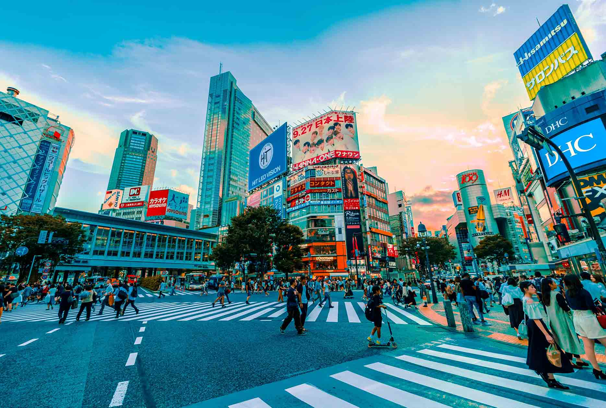

Resemål
Thailand
Thailand är ett land med stor variation, allt från de välkända stränderna på Phuket, storstaden Bangkok, till de mer okända resmålen och öarna i öster. Får du svårt att välja kan du ta hjälp av lokalinvånarna, som hjälper dig plocka ut de resmål som passar bäst för dig och ditt ressällskap. De kan de mesta om vilka resmål som erbjuder bäst stränder, shopping, mat och dryck, upplevelser samt vad som passar bäst för dig som reser med barn – oavsett om du ska resa till Phuket-området, Krabi-området, centrala Thailand eller norra Thailand.

Berlin
Berlin är idag en dynamisk och levande storstad med breda boulevarder och ett kultur-, restaurang-, shopping- och nöjesliv i absolut framkant. Här trängs historiska monument med trendiga caféer, designhotell, öppna parker, konstnärskvarter, loppmarknader och exklusiva butiker. Under en resa till Berlin kan du i stort sett njuta av ett stort nöjesutbud dygnet runt, med barer, klubbar, diskotek, teaterföreställningar och massor av livemusik. Staden är också känd för sina många festivaler.
United states
En resa till USA kan betyda precis vad som helst, storstäder, sol och bad, shopping, restauranger, kultur, nattliv, nöjesparker – det finns något för alla. Vad sägs till exempel om en resa till New York, Miami Beach, Los Angeles, Hawaii eller varför inte en resa med familjen till Disney World i Orlando? Kanske har du Frihetsgudinnan, Vita huset, Golden Gate Bridge, Grand Canyon, Hollywood Boulevard eller The Strip i Las Vegas på din önskelista. I USA kan erbjuda dig det mesta.

Tokyo
På en resa till Tokyo kan alla förväntningar och förhoppningar besannas – ät sushi, sjung karaoke, beskåda sumobrottning eller besök en av de knäppa temarestauranger som finns att välja bland. Under din resa till Tokyo kan vi rekommendera en tur upp till utsiktsdäcket i Tokyo Tower, som är 333 meter högt. Tunnelbanekartan liknar, med sina 14 linjer, mest ett färggrant garnnystan. Tokyo är en plats av överväldigande proportioner, med ett shopping- och nöjesutbud som slår det mesta. Välkommen till en trendig stad i ständig förändring!
Brasilien
Sol, samba och fotboll; välkommen till Brasilien! Brasilien är ett stort land som är fullt av upplevelser och sevärdheter, alltifrån fotboll på stranden till utflykter i Amazonas djungel. Här finns natur, storstad, kust och ett otroligt varierat folkliv, bland mycket annat. Brasilien är också ett spännande matland, med många rätter som man inte träffar på någon annanstans. Passa på att prova det lokala utbudet när du är här, till exempel på en churrascaria. En resa till Brasilien är inte komplett utan en fotbollsmatch, lika mycket folkfest som match.
Guldkorn
Ayers Rock
Avers rock är en gigantisk stenformation av gyllenfärgad sandsten. Den är 600 miljoner år gammal. Stenen är ca 350 meter hög och 3,5 kilometer lång. Aboriginernas namn på platsen är Uluru och anses av dem som helig och används än idag för ceremonier. Uluru ligger vid orten Yulara i nationalparken Uluru-Kata Tjuta.